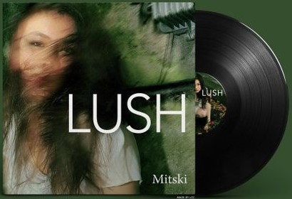
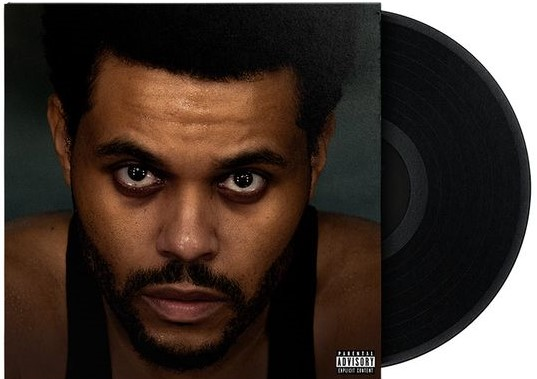

-
MITSKI
Indie Pop
 -
BILLIE EILISH
Pop

-
THE WEEKND
Pop
 -
LANA DEL REY
Alternative Pop

-
JEFF BUCKLEY
Alternative Rock

MITSKI
Indie PopBILLIE EILISH
Pop
THE WEEKND
PopLANA DEL REY
Alternative Pop
JEFF BUCKLEY
Alternative Rock
Dit zijn een paar van mijn favoriete artiesten waar ik veel van mijn tijd naar luister.
Naar muziek luisteren van je favoriete artiesten is al heel erg leuk, maar naar concerten gaan maakt het nog beter. Je ziet de personen die de albums maken en alles is een hele belevenis. De lichten, het wachten tot je naar binnen mag, kaartjes kopen en als je heel veel geluk hebt kan je de artiesten ook nog ontmoeten.
ljhb